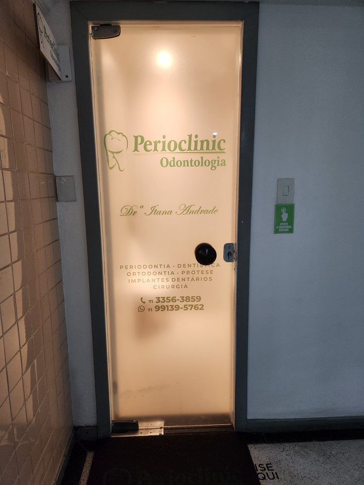
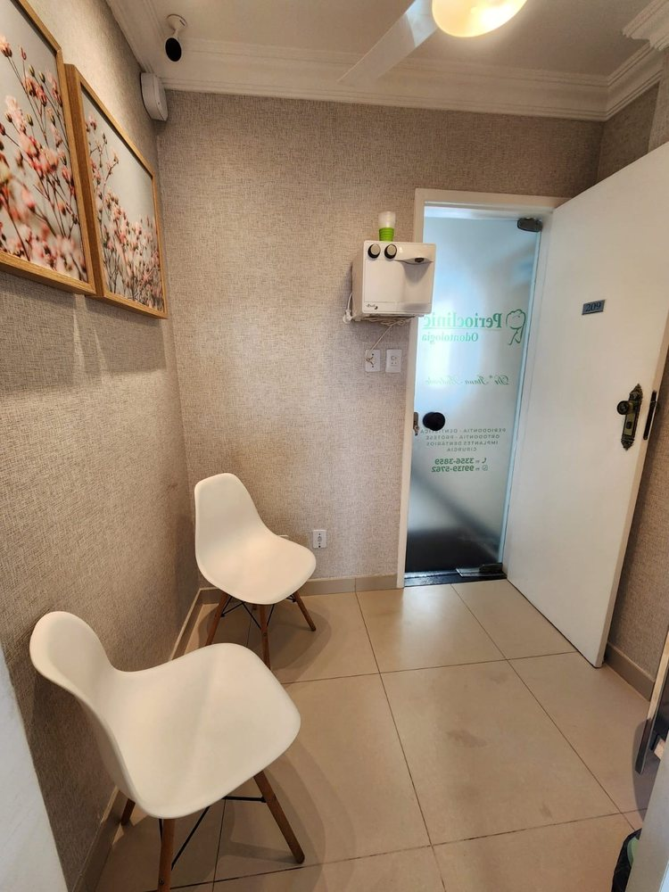
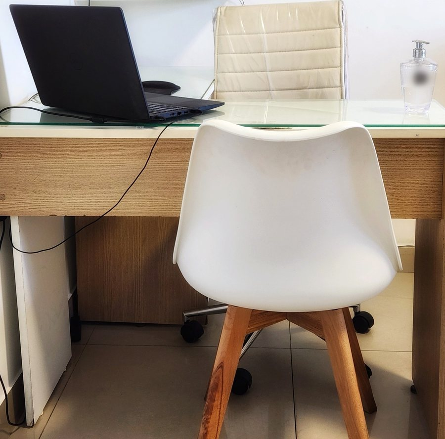

Início · A clínica
A clínica e a equipe: sala 209, desde 2009.
A Perioclinic Odontologia foi aberta em 03/07/2009, com a Dra. Itana como sócia. A ficha da clínica no Google e a porta da sala levam o nome dela.
Brotas Master
O espaço



A sala clínica com as pastilhas verdes e a janela para as árvores, a porta da sala 209 e a sala de espera. Fotos publicadas pela clínica na ficha do Google.
“Um novo ano começa e sou grata por caminhar ao lado de vocês cuidando do seus sorrisos.”Legenda no Instagram da Perioclinic, 01/01/2026 · ver o post
Quem atende
A equipe
A Dra. Itana atende nas áreas dela: periodontia, implantes, cirurgia periodontal estética e prevenção, além de cirurgia oral menor e clínica geral. Na mesma clínica atendem outras profissionais:
Drª Lilian Lordelo
Ortodontia.
Drª Isabela Oliveira
Clínica geral.
Protesista da equipe
Prótese (a clínica a cita no Instagram como @eribasouza).
Nas avaliações, os pacientes também citam a recepção e a assistente.
Atendimento
Horário
Atendimento com hora marcada
Horário da ficha da clínica no Google (segunda a sexta, 8h às 18h); a pausa de almoço, das 12h às 13h30, foi informada pela Dra. Itana numa resposta no Google. Atendimento com hora marcada — confirme com a equipe.
“12h paramos para o almoço e retornamos 13:30!”Resposta da Dra. Itana a uma avaliação no Google · ver a ficha
Chegar
Acesso
- Endereço: Empresarial Brotas Master, sala 209, Av. Dom João VI, 2082, Brotas, Salvador – BA, 40285-000.
- Estacionamento: coberto e gratuito, segundo a ficha da clínica no Google.
- Acessibilidade: entrada, banheiro e estacionamento acessíveis para cadeira de rodas, segundo a ficha.
- Contato: WhatsApp (71) 99139-5762 · telefone (71) 3356-3859.

Rota
Mapa
Dúvidas frequentes
Perguntas comuns
Tem estacionamento?
A ficha da clínica no Google indica estacionamento coberto gratuito. Confirme com a equipe antes de ir.
Aceita convênio?
Confirme com a equipe, pelo WhatsApp, as condições de atendimento.
Atende aos sábados?
Pela ficha da clínica no Google, não: o atendimento é de segunda a sexta.
Agende
Comece por uma avaliação, com calma.
Perioclinic Odontologia, Empresarial Brotas Master, sala 209, em Brotas. A equipe combina dia e horário pelo WhatsApp (71) 99139-5762.